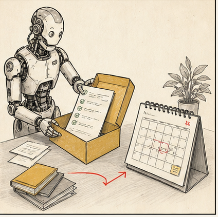

появляется боль
Есть повторяющаяся задача, где команда теряет время, силы и качество.
В маленькой команде новая практика обычно приживается там, где она действительно помогает работе: экономит время, делает результат понятнее и снижает количество лишней ручной рутины.

Есть повторяющаяся задача, где команда теряет время, силы и качество.
Один человек собирает первый полезный сценарий, а не презентацию “про будущее”.
Команда видит конкретный выигрыш: быстрее, чище, понятнее, с меньшим количеством ручной рутины.
Промпт, папка, owner, gate и пример переходят из головы одного человека в общую систему.
Поэтому амбассадор здесь - это не “главный по AI”, а человек, который собирает материал, объясняет логику, помогает коллегам и переводит удачные ходы в повторяемый рабочий контур.
scout ищет кейсы, инструменты, примеры и приносит не новости, а применимые сценарии
translator переводит техно-язык в язык роли: дизайнеру одно, редактору другое, продюсеру третье
builder собирает первый рабочий контур: папки, промпты, шаблоны, naming, правила хранения
coach помогает коллегам запустить 2-3 первых прогона и не бросить после первого кривого результата
gate owner держит рамку качества: что можно, что нельзя, где нужен human approval
archivist сохраняет лучшие кейсы, провалы, правки и обновляет общий материал команды
Следит, чтобы сценарий реально жил в папках, календаре, портале, тасках и обновлениях.
Понимает саму работу: дизайн, редактура, продакшн, маркетинг. Иначе все превратится в формальный ритуал.
Объясняет руководителю и коллегам, зачем это нужно, где риски и какой участок окупается первым.
Иногда это три человека. Иногда один и тот же человек тащит все три роли, из-за чего и выгорает, черт побери.
Что сработало, в каком контексте, на каком входе, с какой ручной правкой и почему это считается хорошим результатом.
Их полезно сохранять как evidence: где сломалось, какая гипотеза не подтвердилась и какое правило стоит уточнить.
Не одна “идеальная” команда, а версии под разные роли, форматы, ограничения и уровень подготовки коллег.
Что важно посмотреть человеку до публикации: бренд, факты, права, структура, визуальный вкус, безопасность.
Амбассадор собирает папку референсов и показывает, как агент снимает стиль и пишет промпты под визуальный output.
Один человек приносит структуру мониторинга, а потом команда принимает решения уже не из хаоса.
Из одного интервью или лекции агент готовит набор форматов, а амбассадор доводит это до рабочей схемы.
Даже простая нормализация файлов, имен и статусов дает команде первый ощутимый выигрыш и дисциплину.
Полезно выбрать один участок, определить владельца процесса, собрать материалы, сделать первые 3-5 прогонов и зафиксировать quality gate.
Полезно подключить второго человека, сохранить working prompt, примеры и сложные кейсы, чтобы сценарий начал повторяться устойчиво.
Дальше сценарий можно упаковать в hub, weekly review и короткую инструкцию. После этого уже легче расширять подход на следующий участок.
Финальный смысл, риск, качество и публикационное решение остаются у людей, а не у самого громкого тулза недели.
Результат последней лекции - понятная опора: кто отвечает, что именно копить, что смотреть раз в неделю и как бережно удерживать новую практику после курса.
Начать с одного участка работы, который команде действительно важно сделать легче, быстрее или устойчивее.
Вместе определить, какой у этой задачи вход, какой ожидается выход и где особенно важен human review.
Зафиксировать, что будет полезно сохранять после каждого прогона: prompt, output, правка и новое правило.
Договориться о первом weekly review: кто приносит кейсы и кто помогает превратить удачные решения в общий стандарт.
Один рабочий участок, один владелец процесса, одна папка с материалом и один quality gate обычно дают более устойчивый старт, чем параллельный запуск пяти экспериментов.
Финальная 3-месячная рамкаПосле каждого прогона сохранять вход, prompt, output, ручную правку, решение и правило. Без changelog внедрение не накапливается.
Лекция про hubКоманде полезно пользоваться skills и workflow-репами, а не каждый раз переписывать запрос с нуля. Так сохраняется практика и снижается зависимость от случайных формулировок.
anthropics/skills · 142k+ stars goose-skills · 665 starsДля дизайнера особенно полезно освоить Figma desktop и Dev Mode, а для амбассадора - уверенно работать с Claude Code рядом, чтобы handoff, prompts и система материалов держались одной связкой.
Figma desktop Claude Code setupЗдесь задача амбассадора простая: не впечатлить команду AI-магией, а довести один новый рабочий контур до повторяемого состояния.
У каждого пилота полезно сразу определить конкретного владельца процесса, чтобы решения и обновления не терялись.
Prompt, input, output, правка, decision note и quality gate.
Фиксированный weekly review помогает удерживать ритм лучше, чем случайные разговоры между встречами.
Расширять подход обычно легче после устойчивого результата на одном сценарии.
Следить за Claude Code, skills, official plugin directory и MCP. Это не “новости ради новостей”, а постоянное обновление рабочего инструментария команды.
Claude Code Official plugin directory · 28k+ stars MCP introНужно уметь писать короткие рабочие задания, а не шаманить. Для этого хватит одной нормальной школы и постоянной практики на своих материалах.
Anthropic tutorial · 36k stars Prompt Engineering GuideДля контента, маркетинга и GTM не изобретать велосипеды. Брать готовые связки, тестировать на своих задачах и сохранять только то, что реально работает.
ai-marketing-skills · 2k+ stars Goose skills catalog marketing-os-starterЕсли команде нужен широкий каталог на вырост, а не только узкий стартовый набор, есть смысл держать один большой skill library и вытаскивать из него нужное по ролям.
antigravity-awesome-skills · 39k+ stars awesome-claude-code